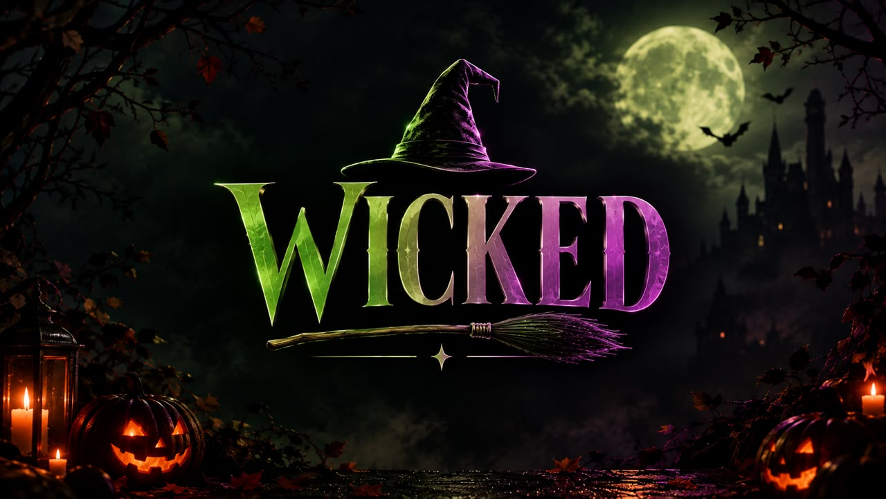
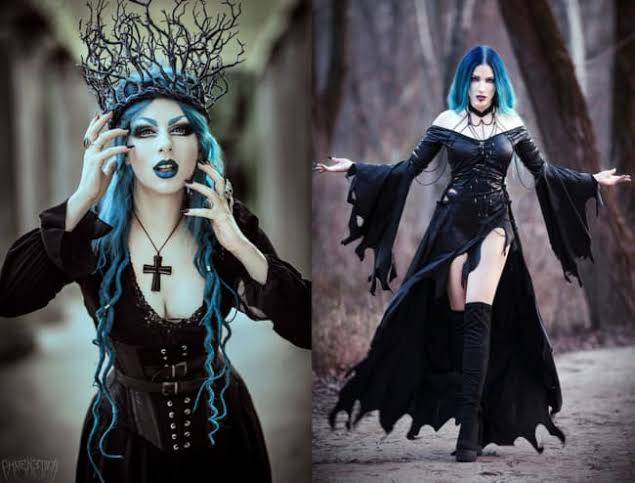
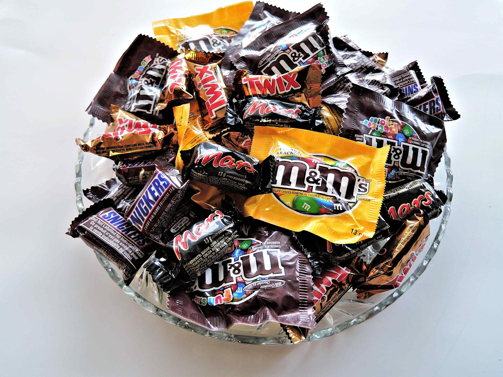

WICKED: O FILME
*Wicked* conta a história de Elphaba e Glinda, duas jovens que se conhecem na Universidade de Shiz e acabam desenvolvendo uma amizade inesperada. Enquanto Glinda é popular e admirada, Elphaba enfrenta o preconceito por ser diferente. A história mostra como suas escolhas e experiências transformam suas vidas e revelam uma nova perspectiva sobre a famosa história do Mágico de Oz.
Go somewhere
Livros
O ADM da página te recomenda...
1. O Iluminado — Stephen King
2. Frankenstein — Mary Shelley
3. Drácula — Bram Stoker
4. A Assombração da Casa da Colina — Shirley Jackson
5. Coraline — Neil Gaiman
Go somewhere
Lendas
O Curupira é uma figura do folclore brasileiro conhecida como protetor das florestas. Ele possui cabelos vermelhos e os pés virados para trás, confundindo quem tenta segui-lo. Segundo a lenda, ele usa seus poderes para proteger os animais e as árvores. Caçadores e pessoas que maltratam a natureza podem se perder ao tentar encontrá-lo. Por isso, o Curupira é visto como um guardião misterioso da floresta.
Go somewhereALERTA!!!!
Seu computador foi amaldiçoado.
Para desfazer a maldição, você precisa fechar esta janela...
...mas você já sabia que não deveria ter clicado, né?
Halloween
O que é o Halloween?
O Halloween, também conhecido como Dia das Bruxas, é uma das celebrações mais populares do mundo. Comemorado principalmente no dia 31 de outubro, a data é marcada por fantasias, abóboras decoradas, doces, histórias de terror, festas e brincadeiras que transformam a noite em uma verdadeira celebração do mistério e do sobrenatural.
Apesar de hoje ser conhecido por seu lado divertido e assustador, o Halloween possui uma história muito mais antiga. Suas origens estão ligadas a antigas tradições dos povos celtas, especialmente a uma celebração conhecida como Samhain, realizada para marcar o fim do período de colheitas e a chegada do inverno.
Acreditava-se que, durante essa época do ano, a fronteira entre o mundo dos vivos e o mundo dos mortos se tornava mais próxima.
Com o passar dos séculos, essas tradições foram se transformando e incorporando elementos de diferentes culturas e costumes. A celebração também passou por influências do cristianismo e, posteriormente, ganhou enorme popularidade em países como a Irlanda, o Reino Unido e, principalmente, os Estados Unidos.
De onde veio o nome Halloween?
A palavra Halloween tem origem na expressão inglesa “All Hallows’ Eve”, que significa “véspera de Todos os Santos”. A celebração acontecia na noite anterior ao Dia de Todos os Santos, comemorado em 1º de novembro.
Com o tempo, a expressão foi sendo abreviada e modificada até chegar à forma que conhecemos atualmente: Halloween.
Por que as pessoas se fantasiam?
As fantasias são uma das características mais marcantes do Halloween. A tradição está relacionada às antigas crenças sobre espíritos e criaturas sobrenaturais.
Vestir-se como monstros, fantasmas ou outras figuras assustadoras teria, originalmente, relação com a ideia de se proteger ou se disfarçar diante desses seres.
Hoje, porém, a tradição ganhou um significado muito mais divertido. Bruxas, vampiros, esqueletos, fantasmas, personagens de filmes e até fantasias engraçadas fazem parte da celebração.
E por que existem abóboras iluminadas?
Um dos maiores símbolos do Halloween é a famosa Jack-o’-lantern, a abóbora esculpida com um rosto e iluminada por dentro.
A tradição está ligada a uma antiga lenda irlandesa sobre Stingy Jack, um homem conhecido por sua esperteza e por enganar o próprio diabo.
Segundo a história, depois de sua morte, Jack teria sido condenado a vagar eternamente carregando apenas uma brasa dentro de um nabo esculpido.
Quando a tradição chegou aos Estados Unidos, os nabos foram substituídos pelas abóboras, que eram mais abundantes e fáceis de esculpir. Assim nasceu um dos maiores símbolos do Halloween moderno.
“Doces ou travessuras”
Outra tradição muito conhecida é o famoso “trick or treat”, conhecido em português como “doces ou travessuras”.
Crianças e, atualmente, pessoas de todas as idades saem fantasiadas visitando casas e pedindo doces. A brincadeira representa uma espécie de troca: quem oferece doces evita uma possível “travessura”.
Com o tempo, essa prática se tornou uma das atividades mais populares do Halloween, especialmente nos Estados Unidos e no Canadá.
Halloween no mundo
Embora tenha raízes europeias, o Halloween se espalhou por diversos países e ganhou características diferentes em cada lugar.
Nos Estados Unidos, por exemplo, a data movimenta festas, casas decoradas, eventos temáticos e uma enorme tradição de fantasias e doces.
No Brasil, o Halloween também conquistou espaço, principalmente entre jovens, escolas, festas e eventos temáticos. Mesmo não sendo uma celebração tradicional brasileira, sua presença cresce a cada ano, misturando costumes internacionais com a criatividade e o jeito brasileiro de comemorar.
Mais do que uma noite de medo, o Halloween acabou se tornando uma celebração da imaginação, da fantasia e do desconhecido. É o momento em que monstros viram fantasias, casas se transformam em cenários assustadores e histórias sobrenaturais ganham vida.
Uma noite para entrar no mundo do desconhecido
Seja pelas antigas lendas, pelas fantasias, pelos doces ou simplesmente pela diversão de sentir aquele frio na barriga, o Halloween continua encantando pessoas ao redor do mundo.
Afinal, algumas noites foram feitas para serem um pouco mais sombrias, misteriosas e… WICKED.